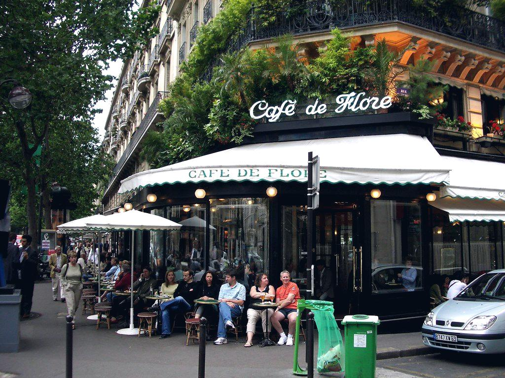
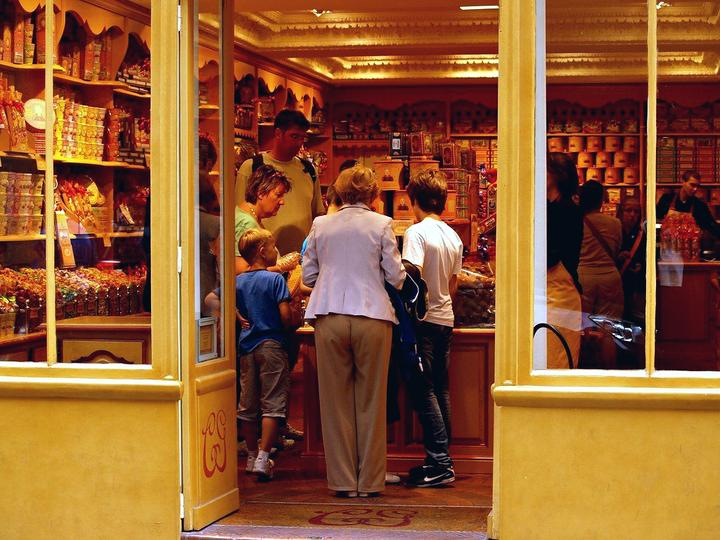
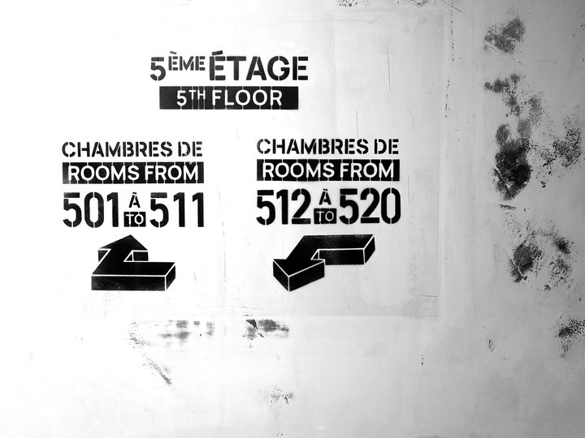
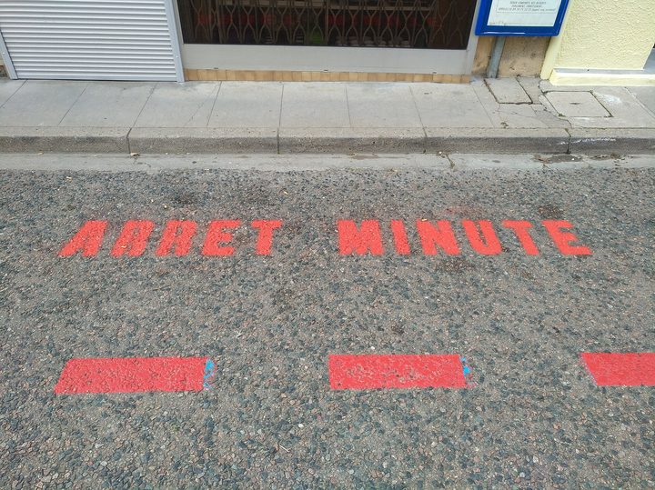

Votre secteur d'activité a ses propres contraintes
Une croix de pharmacie, un totem de concession et un plan d'évacuation d'entrepôt n'obéissent pas aux mêmes règles. Retrouvez ci-dessous les besoins, les obligations et les budgets propres à votre activité.
 Pharmacie & parapharmacie
Pharmacie & parapharmacieSignalétique et enseigne de pharmacie
L'officine est un cas particulier : la croix est réglementée, la vitrine est un support de santé publique autant que de commerce, et le rayonnage doit…
Voir le secteur
Restaurant, bar & hôtelEnseigne et signalétique pour restaurant, bar et hôtel
En restauration, l'enseigne ne dit pas seulement qui vous êtes : elle dit à quel prix et pour quelle occasion. Un néon rose et un lettrage laiton sur …
Voir le secteur
Santé & professions libéralesPlaque et signalétique pour cabinet médical et profession libérale
Pour une profession libérale, la plaque est un acte encadré : chaque ordre professionnel fixe ce qui peut y figurer, et parfois ses dimensions. La sig…
Voir le secteur Automobile & garage
Automobile & garageEnseigne et signalétique pour garage, carrosserie et concession
Un garage se signale de loin, depuis une voie circulée, et doit en même temps organiser un atelier où circulent véhicules et piétons. Deux exigences o…
Voir le secteur Coiffure, beauté & bien-être
Coiffure, beauté & bien-êtreEnseigne et vitrine pour salon de coiffure, institut et barbier
Dans la beauté, la vitrine fait le prix. Un salon dont on ne voit rien depuis la rue est perçu comme fermé ; un salon entièrement ouvert met ses clien…
Voir le secteur Immobilier & agences
Immobilier & agencesEnseigne et vitrine pour agence immobilière
L'agence immobilière est le commerce dont la vitrine travaille le plus : elle change chaque semaine, elle est lue debout pendant plusieurs minutes, et…
Voir le secteur Bâtiment & artisans
Bâtiment & artisansMarquage et signalétique pour artisans et entreprises du bâtiment
Pour un artisan, le véhicule est le premier support publicitaire et le panneau de chantier le deuxième. Ensemble, ils coûtent moins qu'une campagne lo…
Voir le secteur
Industrie & logistiqueSignalétique industrielle, sécurité et marquage d'entrepôt
Sur un site industriel, la signalétique est d'abord un outil de prévention, ensuite un outil de productivité. Un entrepôt correctement repéré réduit l…
Voir le secteur Commerce de détail
Commerce de détailEnseigne, vitrine et PLV pour commerce de détail
Un commerce dispose de trois secondes pour arrêter un passant, et d'une seconde et demie pour capter l'attention à l'intérieur. L'enseigne, la vitrine…
Voir le secteur Collectivités & ERP
Collectivités & ERPSignalétique pour collectivités et établissements recevant du public
Pour une collectivité, la signalétique engage la responsabilité autant qu'elle rend service : accessibilité, sécurité, égalité d'accès à l'information…
Voir le secteur Franchises & réseaux
Franchises & réseauxDéploiement d'enseignes et de signalétique pour réseaux multi-sites
Déployer une identité sur trente points de vente n'est pas trente fois le même chantier : c'est un problème de reproductibilité. Mêmes matériaux, même…
Voir le secteur Sport, loisirs & associations
Sport, loisirs & associationsSignalétique et supports pour salles de sport, clubs et associations
Salles de sport, clubs et associations partagent une contrainte : des budgets serrés, des supports qui doivent durer plusieurs saisons, et des partena…
Voir le secteurVous avez un projet de communication visuelle ?
Commerce, entreprise, artisan, profession libérale, collectivité : décrivez votre projet en 2 minutes. Nous le qualifions et le confions à des professionnels sélectionnés près de chez vous. Vous recevez des propositions comparables sous 48 heures, gratuitement et sans engagement.
Demander mon devis gratuit